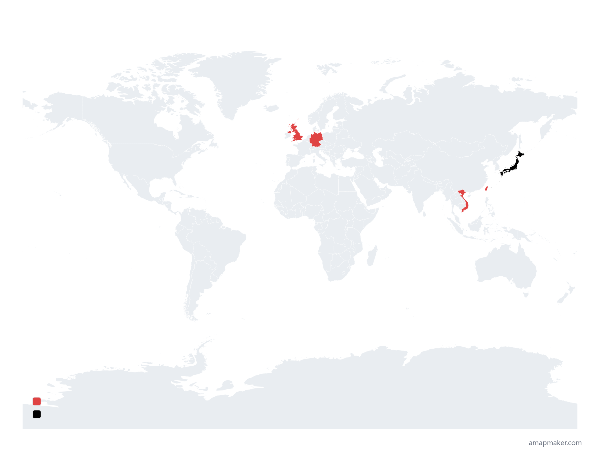
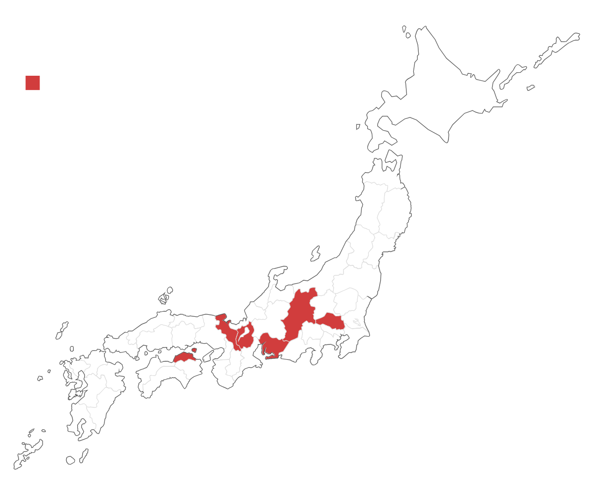

プロフィール

旅行が大好きな大学2年生
プログラミング勉強中
旅行記録をまとめていきます！
＃圧倒的アウトドア派 ＃enfp ＃旅好き ＃山登り
Travel Map
※このマップは、本ブログに記録している旅先をまとめたものです。
これまでに訪れたすべての場所ではありません。
World

Japan

旅行が大好きな大学2年生
プログラミング勉強中
旅行記録をまとめていきます！
＃圧倒的アウトドア派 ＃enfp ＃旅好き ＃山登り
※このマップは、本ブログに記録している旅先をまとめたものです。
これまでに訪れたすべての場所ではありません。

